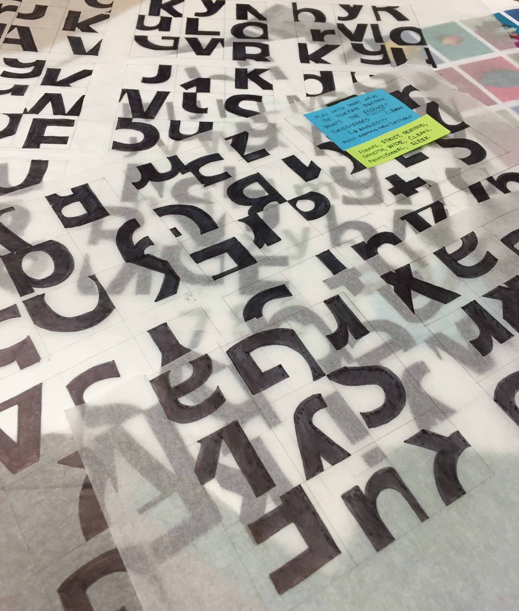
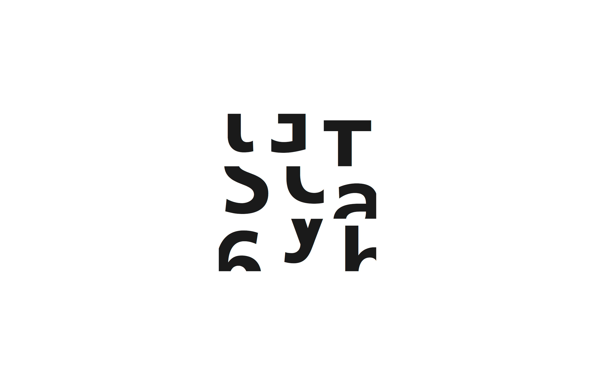
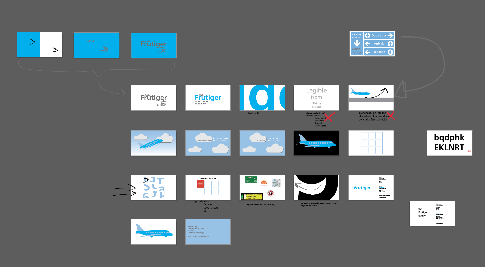

Frutiger Study
Type Study, Motion Graphics
To gain a stronger understanding of typography and letter structure, I analyzed the typeface Frutiger 65 Bold, designed by Adrian Frutiger. I assembled a 3x3 grid of the typeface's most prominent features, including its robust verticals and short finials.
After assembling the grid, I used AfterEffects to create a motion graphics video detailing the history of Frutiger 65 Bold, its uses, and the rest of the Frutiger family.

Grid Iterations
I made several iterations of grids on tracing paper to better understand the structure and similarities between letters, both uppercase and lowercase. Creating many iterations also helped me visualize how to make a balanced grid that still emphasizes the notable aspects of Frutiger.


Storyboarding
I created a storyboard in Illustrator to help guide me through the process of making the video in AfterEffects. Within the storyboard, I kept track of the different scenes I was presenting and the transitions between them. While some scenes didn't make it into the final viedo, the Illustrator storyboard helped get the ball rolling when I actually started iterating in AfterEffects.